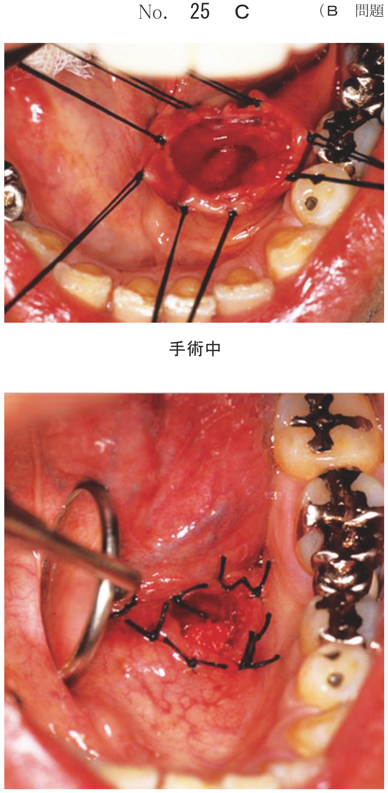
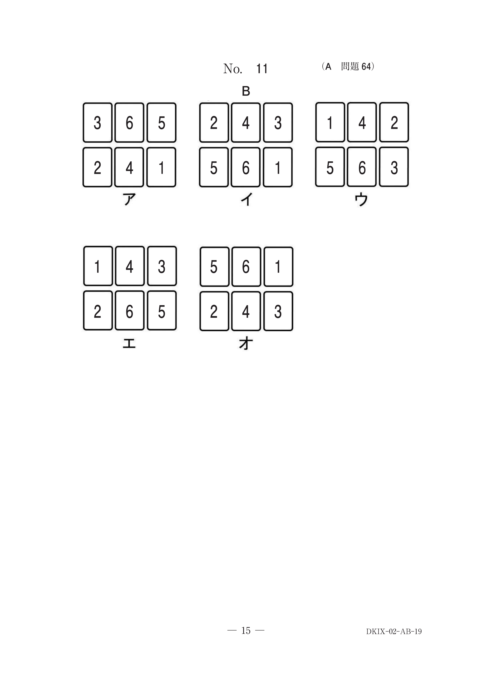
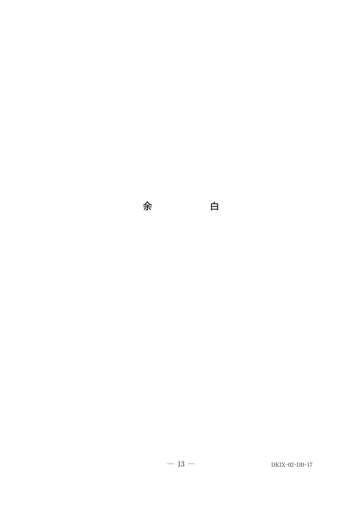
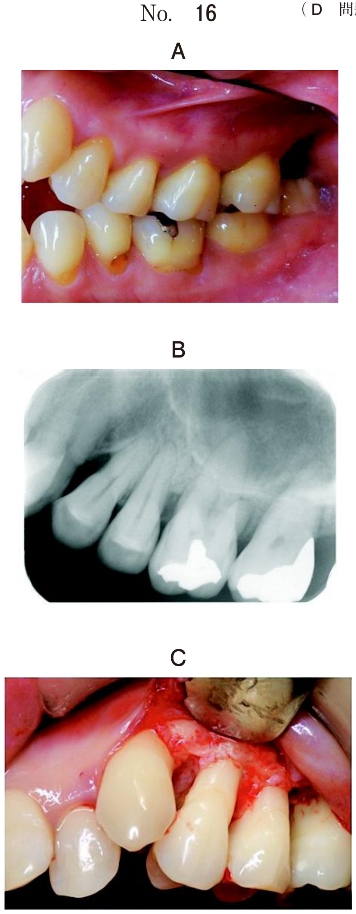
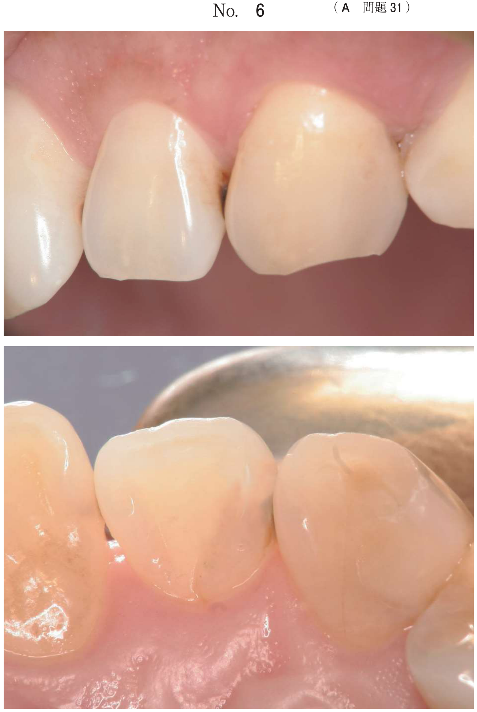

診査・診断
小児歯科の画像診断（頻出）
口腔内写真とエックス線画像から所見を読み取る問題が多い。
- 過剰歯：上顎前歯部に多い、正中離開の原因
- 先天欠如歯：下顎第二小臼歯、側切歯に多い
- 埋伏歯：X線で歯胚の位置確認
- 癒合歯：歯数減少の原因
- 内部吸収：歯の変色（ピンク色）の原因
過剰歯
特徴
- 上顎正中部に好発（正中過剰歯）
- 正中離開、隣在歯の萌出遅延・位置異常の原因
- 口蓋側に萌出することがある
対応
| 状態 | 対応 |
|---|---|
| 永久歯の萌出を妨げている | 抜去 |
| 口蓋に萌出している | 抜去 |
| 埋伏で影響なし | 経過観察 |
先天欠如歯
好発部位
- 下顎第二小臼歯（最多）
- 上顎側切歯
- 下顎側切歯
先天欠如があると乳歯が晩期残存する。
空隙歯列の原因
| 原因 | 機序 |
|---|---|
| 埋伏歯 | 正常位置に萌出せず空隙が残る |
| 矮小歯 | 歯冠が小さく空隙が生じる |
| 先天欠如歯 | 歯の数が不足 |
| 癒合歯 | 2歯が1歯分となり空隙発生 |
| 過剰歯 | 正中離開の原因となることがある |
歯の変色の診断
| 変色の色調 | 原因 |
|---|---|
| ピンク〜赤色 | 内部吸収（歯髄腔が透見） |
| 灰色〜黒色 | 歯髄壊死（外傷後など） |
| 黄褐色 | テトラサイクリン歯、エナメル質形成不全 |
| 白斑 | 初期齲蝕、フッ素症 |
追加検査の選択
| 目的 | 検査 |
|---|---|
| 埋伏歯・過剰歯の三次元的位置確認 | 歯科用コーンビームCT |
| 歯髄の生死判定 | 歯髄電気診（幼若歯は反応不安定） |
| 根尖病変の評価 | デンタルX線、パノラマX線 |
過去問（代表例）
6歳の男児。口蓋部の違和感を主訴として母親と来院した。2週前から気付いていたが、疼痛がないため放置していたという。初診時の口腔内写真（別冊No.39A）とエックス線写真（別冊No.39B）を別に示す。診断とその対応との組合せで正しいのはどれか。1つ選べ。


b 過剰歯————咬合調整
c 過剰歯————抜 去
d 切歯結節———経過観察
e 切歯結節———咬合調整
【解説】口蓋に萌出した過剰歯であり、抜去が適応。X線で正中過剰歯が確認でき、すでに萌出しているため経過観察ではなく抜去を行う。
5歳の男児。下顎左側乳犬歯の変色を主訴として来院した。6か月前に気付いたが、そのままにしていたという。初診時の口腔内写真（別冊No.19A）とエックス線画像（別冊No.19B）を別に示す。原因として考えられるのはどれか。1つ選べ。


b 歯髄充血
c 内部吸収
d 外来性色素沈着
e 象牙質形成不全症
【解説】歯冠部のピンク色の変色は内部吸収を示唆。X線で歯髄腔の拡大（内部吸収像）が確認できる。歯髄充血は一過性で6か月も持続しない。
11歳の男児。歯と歯の間に隙間があるのが気になり来院した。初診時の口腔内写真（別冊No.17A）とエックス線画像（別冊No.17B）を別に示す。空隙歯列の原因はどれか。3つ選べ。


b 埋伏歯
c 癒合歯
d 矮小歯
e 先天欠如歯
【解説】空隙歯列の原因として埋伏歯（正常位置に萌出しない）、矮小歯（歯冠が小さい）、先天欠如歯（歯数不足）が挙げられる。過剰歯は正中離開の原因にはなるが、空隙歯列全般の原因としては選択されない。
5歳の女児。上顎前歯の形態異常を近医で指摘され来院した。2か月前に上顎左側乳中切歯が脱落し後継歯が萌出してきたという。初診時の口腔内写真（別冊No.25A）とエックス線画像（別冊No.25B）を別に示す。治療方針の決定に有用なのはどれか。1つ選べ。


b 咬合力検査
c 歯髄電気診
d 歯周ポケット検査
e 歯科用コーンビームCT
【解説】形態異常のある歯の詳細な位置・形態を確認するには歯科用コーンビームCTが有用。三次元的な評価が可能で、埋伏歯や過剰歯の位置関係、歯根の形態などを正確に把握できる。
12歳の女児。口腔内の精査を希望して来院した。学校健康診断で生え代わりの異常の可能性を指摘されたという。自覚症状はない。初診時の口腔内写真（別冊No.13A）とエックス線画像（別冊No.13B）を別に示す。正しい所見はどれか。2つ選べ。


b └3の歯胚位置異常
c 5」の先天欠如
d 「2の先天欠如
e 5┐の先天欠如
【解説】X線画像から└3（下顎左側犬歯）の歯胚位置異常と5」（上顎右側第二小臼歯）の先天欠如が確認できる。先天欠如があると後継永久歯がないため乳歯が残存する。